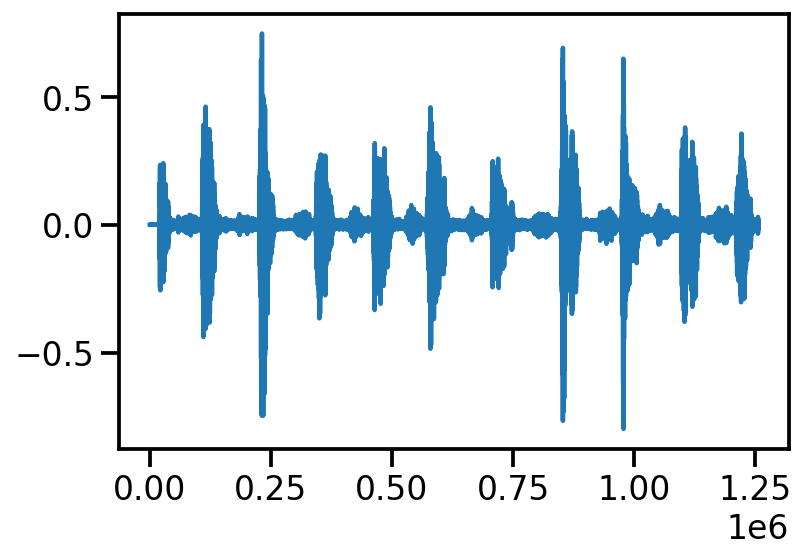
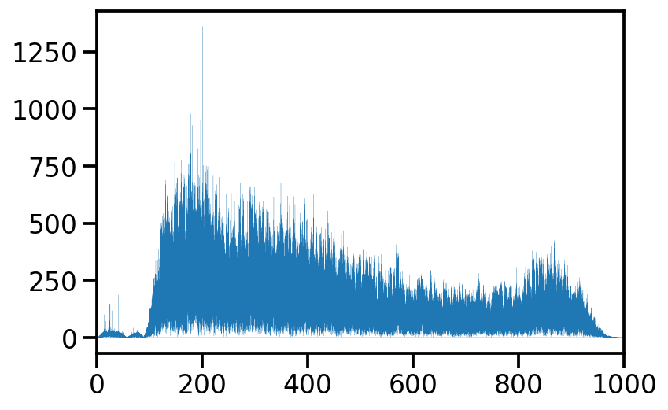
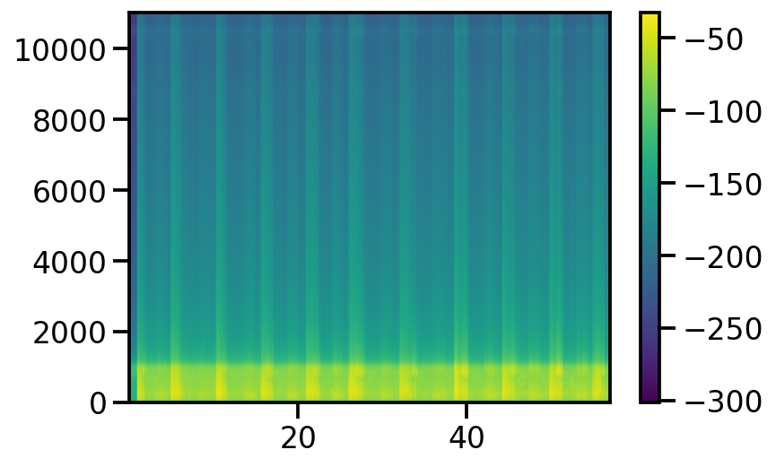
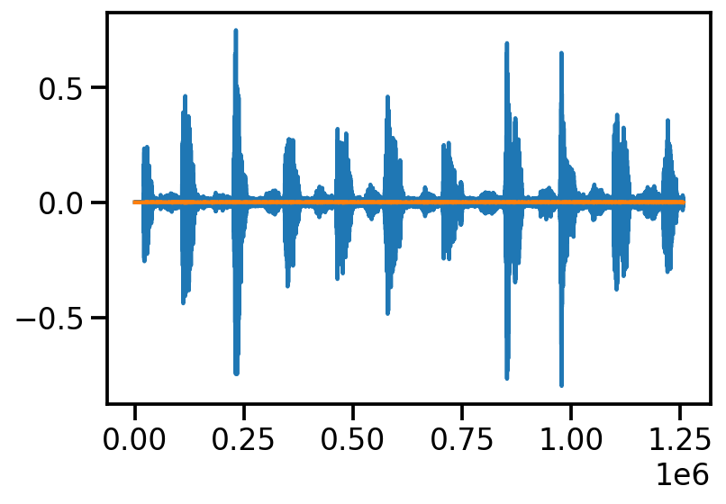
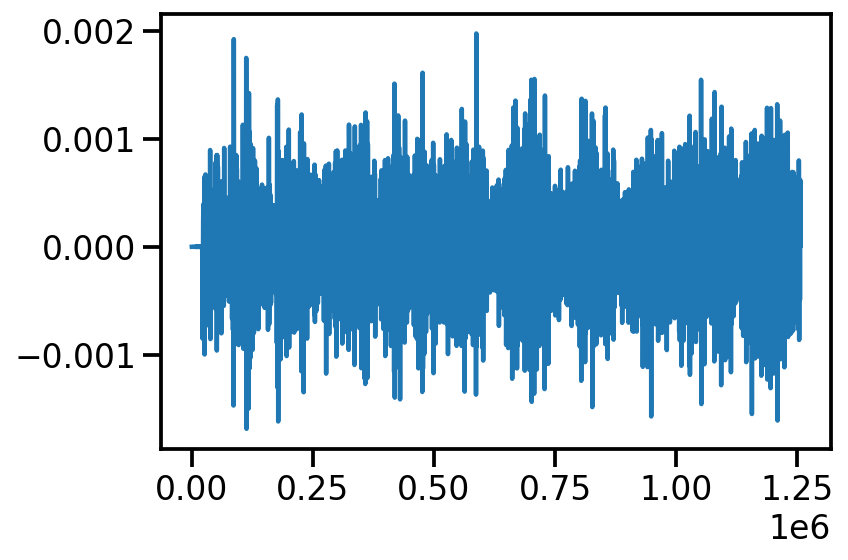
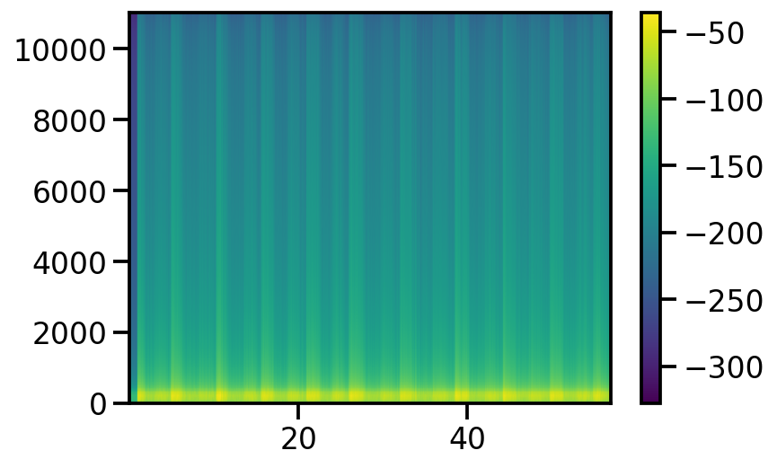

import numpy as np
import matplotlib.pyplot as plt
import torch
import seaborn as sns
from functools import partial
sns.reset_defaults()
sns.set_context(context="talk", font_scale=1)
%matplotlib inline
%config InlineBackend.figure_format='retina'Audio Filtering
Basic Imports
import librosa
y, sr = librosa.load("/Users/nipun/Downloads/external-sensors_data_audio_audacity_recorded-mask-tidal-breathing.wav")plt.plot(y), sr([<matplotlib.lines.Line2D at 0x139db2490>], 22050)
from scipy import signalfrom scipy.fft import fft, fftfreq
yf = fft(y)
xf = fftfreq(len(y), 1 / sr)
plt.plot(xf, np.abs(yf), lw=0.1)
plt.xlim((0, 1000))(0.0, 1000.0)
plt.specgram(x = y,Fs=sr);
#plt.ylim((0, 100))
plt.colorbar()<matplotlib.colorbar.Colorbar at 0x1424d5fd0>
sos = signal.butter(10, 20, 'lp', fs=sr, output='sos')
filtered = signal.sosfilt(sos, y)
plt.plot(y)
plt.plot(filtered)
plt.plot(filtered)
plt.specgram(x = filtered,Fs=sr);
#plt.ylim((0, 100))
plt.colorbar()<matplotlib.colorbar.Colorbar at 0x1404d1d00>